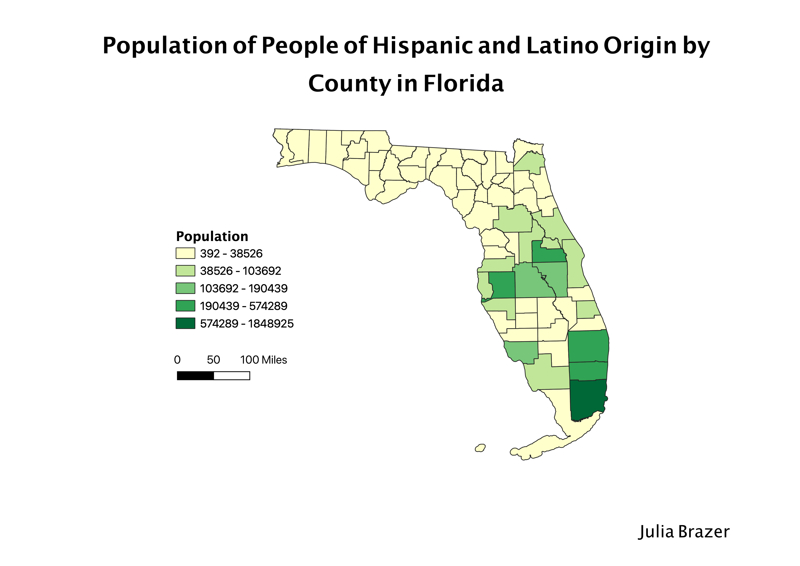

Homework 7: Florida Census Data Choropleth
Julia Brazer
This map depicts the population densities in Florida counties of people who classify with Latino or Hispanic origin. The darkest green, Miami Dade County has the highest population, followed by Broward County (where I am from), Palm Beach County, Orange County, and Hillsburough County. These regions are all areas of high development and economic oppertunity (i.e. Miami, Coral Gables, Fort Lauderdale, Pompano, Hollywood, Orlando, and Tampa), which tend to hold more diverse populations. The areas with small Hispanic and Latino populations, displayed with light green, are more rural, which do not usually attract people of diverse backgrounds and cultures.

Data used for this project
CSV dataset
Link to shapefile